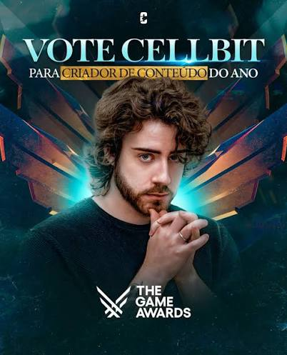

O spin-off Ordem Paranormal: Hexatombe – O Spin-off de Sangue, criado e dirigido por Cellbit, com coprodução do Grupo Farol, lança a campanha social “Tudo Começa Pelo Sangue”, que incentiva a doação voluntária de sangue em todo o Brasil. A comunidade gamer mostrou sua força nas redes sociais logo nas primeiras 24 horas após o anúncio da campanha. O post oficial no Instagram ultrapassou 3 milhões de visualizações e somou mais de 180 mil interações, entre curtidas, comentários, salvamentos e compartilhamentos. No X (antigo Twitter), a iniciativa gerou mais de 690 mil impressões e chegou ao topo dos trending topics por algumas horas no domingo de lançamento. Inspirada pelo simbolismo do sangue no universo do jogo, a ação transforma a intensidade das emoções vividas pelos fãs em um gesto concreto de solidariedade: salvar vidas. Durante o período da campanha, entre 10 e 14 de novembro, qualquer pessoa apta pode doar sangue em hemocentros credenciados, incluindo o GSH Banco de Sangue de São Paulo, parceiro institucional da iniciativa, assim como os demais bancos de sangue do Grupo GSH. Consulte aqui todas as informações! A campanha convida os participantes a compartilhar suas experiências nas redes sociais com a hashtag #TudoComeçaPeloSangue, reforçando o impacto coletivo da comunidade. Cada doação será simbolicamente reconhecida e celebrada dentro do universo de Hexatombe, conectando ficção e ação solidária. “Doar sangue é uma missão muito importante para nós na vida real. Cada agente que entra nesse fluxo está salvando vidas de verdade”, afirma Cellbit.

O The Game Awards(abreviado TGA) é uma cerimônia de premiação anual que reconhece os melhores jogos eletrônicos de cada ano e grandes feitos na indústria, foi criada e é apresentada pelo jornalista de jogos eletrônicos Geoff Keighley em 2014. A premiação também anuncia novos títulos. Esta cerimônia é considerada o "Óscar dos Videogames". "E pra finalizar esse ano, ter sido indicado a criador de conteúdo do ano na maior premiação do mundo, ao lado dos maiores criadores do mundo que também fazem um trabalho incrível, foi uma honra enorme e mais uma confirmação de que todo o esforço não foi em vão. Considerando que o júri é primariamente internacional e eu sou o único indicado que não produz conteúdo em inglês, além do impacto gigantesco dos outros nomeados, sei que as chances são baixas. Mas, abrindo meu coração um pouco, há algum tempo eu não estava muito bem mentalmente, e receber esse reconhecimento justo agora pareceu pra mim um sinal do universo de que, sim, eu estou fazendo a coisa certa. Coisas boas eventualmente chegam."
Em um lugar que não existe, a jovem detetive Mia e seu cãozinho Lupi investigam o desaparecimento de seu pai, um dos agentes mais habilidosos do mundo e o líder da Ordo Realitas, uma organização de detetives paranormais. Enigma do Medo é um jogo de investigação e suspense em Pixel Art/3D onde a sua dedução é o seu guia. Jogue e aproveite esse mistério da maneira que quiser: analise minuciosamente cada detalhe em uma narrativa envolvente, peça ajuda a agentes parceiros, confronte inimigos ou tente passar por eles silenciosamente. Enigma do Medo é um jogo de exploração, enigmas e sobrevivência com uma narrativa profunda e envolvente no universo de RPG criado por Rafael Lange (Cellbit) que foi desenvolvido em parceria com a Dumativa e foi financiado por um projeto no Catarse. Ambientado no universo de Ordem Paranormal, o jogo conta com personagens e criaturas já conhecidos além de novos que foram introduzidos pela obra. Foi anunciado em 17 de outubro de 2020 e teve seu lançamento em 28 de novembro de 2024. Depois, uma DLC chamada O Segredo no Cemitério foi anunciada dia 29 de agosto de 2026 para ser lançada em janeiro de 2027.